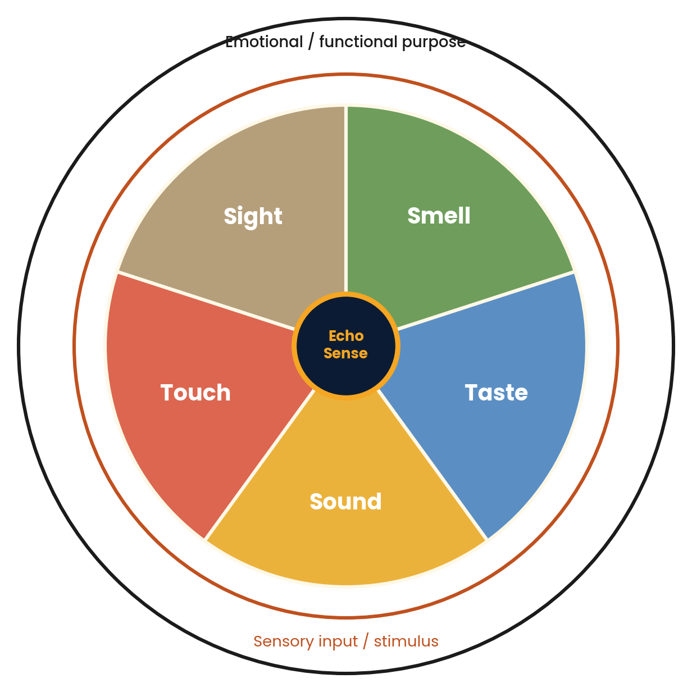
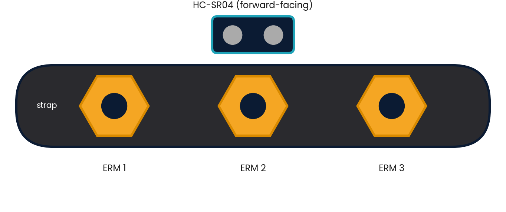
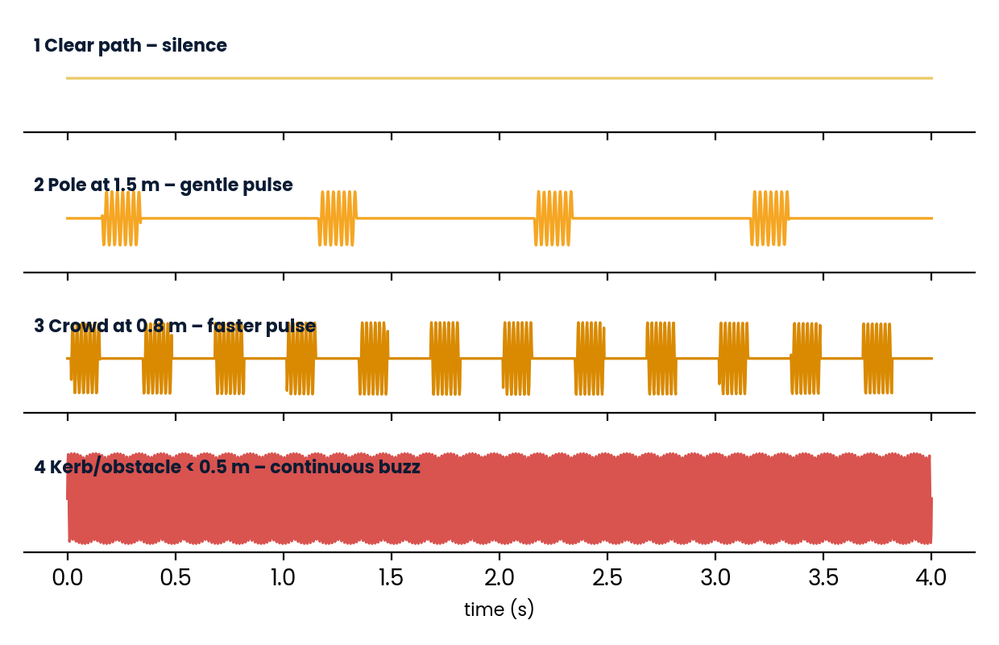

EchoSense
Biomimetic Haptic Wearable
Feel your surroundings beyond sight and sound.
A bat-inspired wristband that listens to the city with silent 40 kHz ultrasound and answers on the skin — gentle when an obstacle is far, urgent when it is near — so a visually impaired pedestrian keeps both ears free for traffic and people.
 CONCEPT RENDER
CONCEPT RENDER
Roadmap
The Design Journey
A double-diamond process: diverge to understand, converge to define, diverge to explore, converge to deliver.

How the project unfolded
- Diverge to understand the problem on a real street.
- Converge on a persona, a 5W1H and one sharp problem statement.
- Diverge again across five senses, then borrow from bats and bees.
- Converge on a tactile language, a mood box, CAD and a live website.
Tap a stage below to jump into it.
Opportunity, Sensory Ethnography, Gap & Sensitivities
Diverge: understand the problem by auditing a busy street through the five senses.
A Flawed Experience and an Unmet Need
people worldwide live with a near or distance vision impairment
WHO, World Report on Vision (2019)A flawed existing experience
- Deprivation: no preview of the path, signage, faces or traffic lights.
- Overload: hearing must track traffic, crowds and voice-navigation at once.
- Friction: a white cane senses the ground about one cane-length ahead and misses head-height hazards such as signboards, branches and vehicle mirrors.
An unmet need
- Today's aids are audio or visual: phone navigation speaks into the same ears already busy with traffic.
- The skin is almost unused: the body's largest sense organ is rarely a navigation channel.
- The opportunity: a silent, hands-free, always-on answer to “what is near me, and how near?”
Sensory audit: a visually impaired pedestrian walking a busy urban street
| Sense | What the pedestrian experiences | Status |
|---|---|---|
| Sight | Absent or severely limited. No preview of the path ahead, signage, faces, kerbs or traffic lights. | DEPRIVED |
| Sound | A constant stream of horns, engines, footsteps, shop music and announcements, used to locate traffic and obstacles. Also needed for conversation and phone navigation. | OVERLOADED |
| Touch | Cane-tip vibration and surface texture, tactile paving, hands on rails, bumps from crowds. Reach is limited to ground level, about one cane-length. | HEAVILY USED, LIMITED REACH |
| Smell | Bakeries, exhaust, rain and flowers act as informal landmarks, helpful but unreliable. | SUPPORTING CUE |
| Taste | Effectively irrelevant while moving through a street. | NOT USED |
Which senses are being ignored, and which are overworked?

The gap in one sentence
Nothing today carries how far away an obstacle is beyond cane reach without also occupying hearing.
- Sight is removed so the brain compensates by over-using hearing.
- Hearing is double-booked with traffic safety and navigation prompts.
- Touch is narrow: only a point (the cane tip), not a field.
- Skin is a free channel: forearm and wrist are sensitive, always available and silent.
EchoSense drops the Sound load from 5 to 3 because distance is delivered silently, and rebalances Touch from a single cane-tip point into a wide-field proximity sense on the wrist.
What drains energy, what comforts, and what that means for the design
What drains energy
- Sudden horns and overlapping crowd noise
- Wind and rain masking useful sounds
- Voice prompts talking over street sounds
- Constant, unchanging vibration (the body tunes it out)
- Hot, rough or sticky materials on skin
What comforts
- Soft, breathable fabrics against the skin
- Smooth, rounded edges the hand can find
- Predictable patterns that repeat reliably
- Silence when nothing is wrong
- Gear that stays put on a moving arm
So the design must…
- Stay silent: no beeps or voice
- Use vibration that varies in rate and strength
- Rest at zero when the path is clear
- Use 3 mm neoprene and rounded hex shapes
- Sit on the wrist or forearm, hands-free
Sensitivities are derived from the sensory audit and published accounts of urban navigation; they are to be confirmed through short interviews with visually impaired users.
5W1H Persona & the Sensory Problem Statement
Converge: one persona, one sharp problem, one question to design against.
WHO
Persona: Asha, 27, a visually impaired postgraduate student who walks and takes public transport daily in a crowded Indian city. Independent, tech-comfortable, tired of relying on strangers.
WHAT
She cannot sense obstacles and their distance early enough beyond cane reach. The cane reaches only the ground, a short way ahead, so she spends every step listening hard.
WHERE
Busy footpaths, crossings, bus stops and markets: noisy, uneven, unpredictable and shared with vehicles and hawkers.
WHEN
Every commute: at peak hours, at dusk and in rain, when sound is masked by traffic or weather.
WHY
Independence, safety and dignity. Fear of collisions reduces confidence and mobility, and constant listening is mentally exhausting.
HOW (today)
White cane, a sighted guide or kind strangers, memorised routes and voice-navigation apps, which compete with hearing.
Written with the course formula, around human emotion and sensory interaction.
Visually impaired urban pedestrians need a way to detect obstacles and judge their distance early in crowded, noisy city streets, but are held back by sensory deprivation of sight and an overloaded sense of hearing that is already busy tracking traffic.
translate the space around a visually impaired pedestrian into silent, intuitive touch cues so that they can walk confidently and independently without relying on their eyes or ears?
Sensory Pentagon, Five-Sense Ideation, Biomimicry & System Architecture
Diverge: run the idea through every sense, then borrow from bats and honeybees.
From Sight to Touch and Sound
EchoSense rebalances the senses. Touch becomes the primary channel. The core idea is run systematically through all five senses.


TOUCH 5/5 · Primary output
From Echolocation to Haptics
Nature's solution to seeing without light, translated to the skin.

Bats emit ultrasonic calls and listen for echoes to navigate in darkness.

An ultrasonic sensor sends pulses and times the returning echo.

Distance is converted into vibration patterns on the skin.

The user feels layout and proximity without eyes or ears.
The echo equation — interactive
v ≈ 343 m/s (sound, 20 °C). An echo after 5.8 ms means an obstacle about 1 m away. The HC-SR04 reads 2–400 cm, so its longest echo is ≈ 23 ms.
Second inspiration: Apis mellifera
The honeybee's hexagon is the most space-efficient tiling. EchoSense borrows it for the shell texture and the honeycomb layout of its haptic motors, so cues stay distinct on a small patch of skin.
Hover the cells: every hexagon has six equidistant neighbours.
Echo in, touch out: a small, low-cost, Arduino-based design


SENSE
HC-SR04 ultrasonic module: 40 kHz, 2–400 cm range, roughly 15° beam, 5 V.
THINK
Arduino Nano times the echo pulse, smooths readings and picks a vibration zone.
FEEL
Coin ERM motors driven by PWM through a transistor with a flyback diode; strength set by duty cycle.
Tactile Language, Storyboard, Mood Box & Sensory Harmony
Converge: give the band a language people can learn in seconds, then test it on real senses.
Distance zones map to distinct vibration patterns in both rate and intensity. Tap a zone to feel it (sound on desktop, vibration on phones).


Four Steps in the City
What every sense experiences at each stage of the journey.
| 1 · Walking, path clear | 2 · Detect, pole at ~1.5 m | 3 · Navigate, crowd at ~0.8 m | 4 · Avoid, kerb at <0.5 m | |
|---|---|---|---|---|
| Touch (primary) | Band is silent. Cane taps pavement texture. | One soft pulse per second, like a calm heartbeat. | Faster pulses, about three per second, ramping up as the gap closes. | Continuous rapid buzz: an unmistakable “stop”, then silence once the user turns away. |
| Sound | Traffic and footsteps. Ultrasonic scan is inaudible. | Unchanged; ears free for a horn. | Crowd noise unaffected; no beeps. | Unchanged; ears stay on traffic. |
| Sight | Not used. | Not used. | Not used. | Not used. |
| Smell / Taste | Bakery and exhaust remain natural landmarks. | Unchanged. | Unchanged. | Unchanged. |
| Emotion | Calm, aware | Alert, curious | Careful, in control | Safe, relieved |
Prototyping the Experience
Low-fidelity physical swatches, a sound playlist and a live vibration demo for class.
Soft, flexible, skin-friendly; holds motors firmly.
Honeycomb texture, findable by touch; rounded hex corners.
Spreads vibration evenly, avoids a sharp sting.
Adjustable fit found by feel in one move.
Sound & demo
- Street playlist: traffic, horns, footsteps, crowd chatter at moderate volume.
- Silence track: to show that ultrasonic sensing adds no sound.
- Live demo: coin motor + Arduino on a classmate's wrist, eyes closed, while a hand moves toward the sensor.
- Scent: none, deliberately.
Audio is off. Press a button to hear what Asha hears — use headphones for the full effect.
All inputs must tell the same story
Each risk of cognitive dissonance and how the design resolves it.
| Check | The story the senses must tell | Dissonance risk | Design resolution |
|---|---|---|---|
| Sound ↔ Touch | Calm street, calm device | A beeping or buzzing device while the path is clear would feel alarming. | Silent ultrasonic sensing; band rests at zero when clear. |
| Touch ↔ Distance | Closer means stronger | A strong buzz for a far object feels wrong and erodes trust. | Monotonic mapping across four zones. |
| Material ↔ Function | Gentle guide, not a warning | A hard, sharp casing would feel hostile on the skin. | Neoprene strap, silicone liner, rounded hex shell. |
| Sight ↔ Touch | Quiet confidence | A bright flashing LED contradicts soft pulses. | Dim, steady status LED only. |
Can you read the tactile language?
Close your eyes (or keep Blindfold on), press play, then name the zone. Ten trials in two rounds of five. On a phone you will feel it through navigator.vibrate(); on desktop it plays as a low tactile hum — use headphones.
3D / 2D Haptic Echolocation Simulator
Drag the obstacle through the 40 kHz sonar cone (or use the slider). Watch the time-of-flight, the zone, the PWM duty cycle and the pulse train respond in real time.
The 3D band mirrors the simulator: its hexagonal ERM nodes glow with the live pulse and the sonar rings bounce back from the obstacle. Enable the output below for a tactile bass pulse and navigator.vibrate() on supported phones.
HC-SR04 range is 2–400 cm; below 2 cm the sensor is blind, so the firmware treats it as Danger.
Digital Twin: Concept, CAD & Physical Build
Concept renders of the final EchoSense band: assembled, exploded, shell and strap. Click any image to zoom; use ← → to browse.
 CONCEPT OVERVIEW · SENSORY PENTAGON
CONCEPT OVERVIEW · SENSORY PENTAGON ⤢
⤢ ⤢
⤢ ⤢
⤢ ⤢
⤢Repository: EchoSense-Biomimetic-Design
A public GitHub Pages site acts as the digital portfolio for the design.
- index.html: dark-mode, amber honeycomb landing page (problem, biomimetic solution, renders, design process).
- README.md: overview, Sensory Gap problem statement, biomimetic inspiration, system architecture, digital twin.
- firmware/: Arduino Nano sketch in C++ mapping distance to PWM haptic patterns.
- assets/ and cad/: diagrams, Fusion 360 renders and prototype photos.
About the Designer
Aravind K. T.: Building on Prior Work
Electrical engineering foundations meet human-centred, socially driven design.
Aravind K. T.
Roll No. 240169
B.Tech, Electrical Engineering (2024–28)
Indian Institute of Technology Kanpur
aravindkt24@iitk.ac.in
sites.google.com/view/aravind-k-t-iitk
github.com/kt2141
Directly relevant work
- H.A.W.K. (Aug–Nov 2025): Arduino-based autonomous tracking robot using ultrasonic, IR and UV sensing with servo and DC motor control. The same sensing know-how now serves people.
- BlueBridge Civic Nexus: civic-tech model that turns citizen complaints into visible action, framed around SDG 11, 16 and 9.
Skills brought to EchoSense
- Embedded C and Python; circuit design
- Sensor integration and motor control
- Grassroots, user-first problem framing
- Policy and stakeholder communication
- SDG-driven impact thinking
Impact & Next Steps
Why It Matters and What Comes Next
Aligned with the UN SDGs
Safer, less stressful mobility.
Low-cost assistive hardware.
Independence for people with visual impairment.
Streets that work for every body.
Roadmap
Concept, CAD digital twin and low-fidelity mood box.
Working Arduino Nano prototype and bench-testing of the distance zones.
User testing with visually impaired participants; refine patterns and comfort.
Multi-sensor sweep, head-height detection, waterproofing, rechargeable battery and cost reduction.
References & Credits
References
- 01World Health Organization (2019). World report on vision. Geneva: WHO.
- 02Griffin, D. R. (1958). Listening in the Dark: The Acoustic Orientation of Bats and Men. Yale University Press.
- 03HC-SR04 ultrasonic ranging module datasheet (40 kHz, 2–400 cm).
- 04Arduino Nano (ATmega328P) technical documentation, arduino.cc.
- 05Autodesk Fusion 360 for CAD modelling and rendering of the digital twin.
- 06Design for Life (DES653): Course Project Process Guidelines (Discover, Define, Develop, Deliver).
Concept infographic and illustrative diagrams were created for this project. Sensory ratings are qualitative design judgements, not measurements.